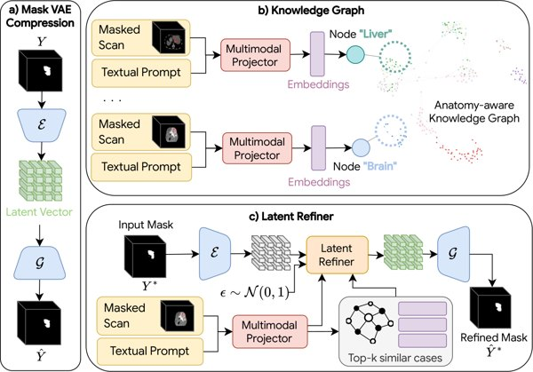

TMLR 2026 Journal · First author
Retrieval-Augmented Correction for Generalist Medical Image Segmentation
Moves anatomical knowledge from model weights into a multimodal knowledge base: a single anatomy-agnostic refiner corrects masks across 10 organs and 18 datasets and generalises zero-shot to unseen organs.